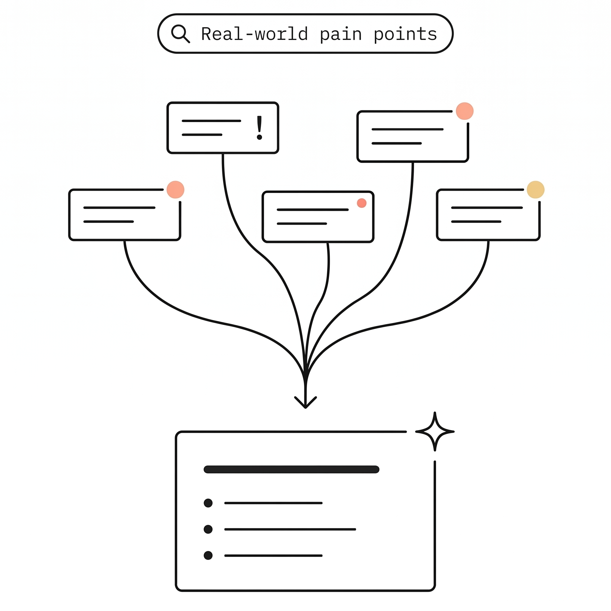
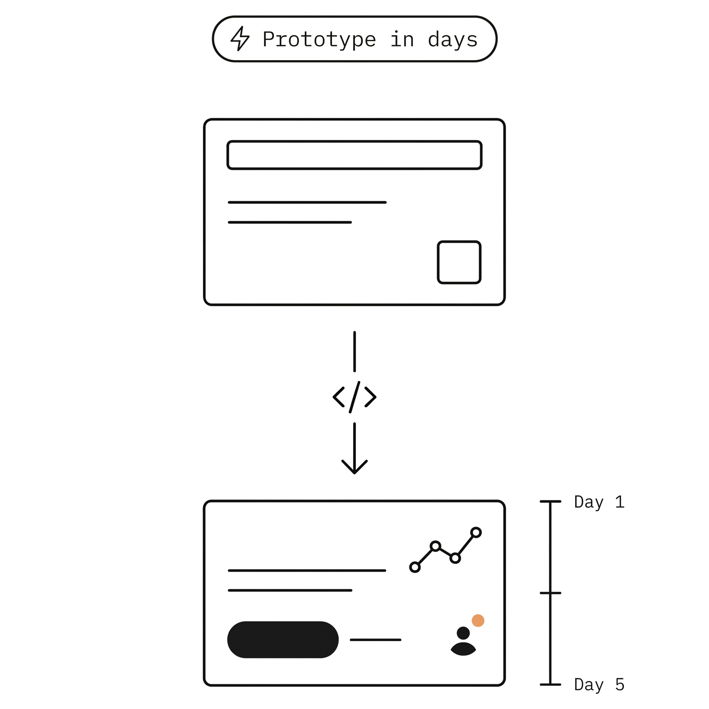
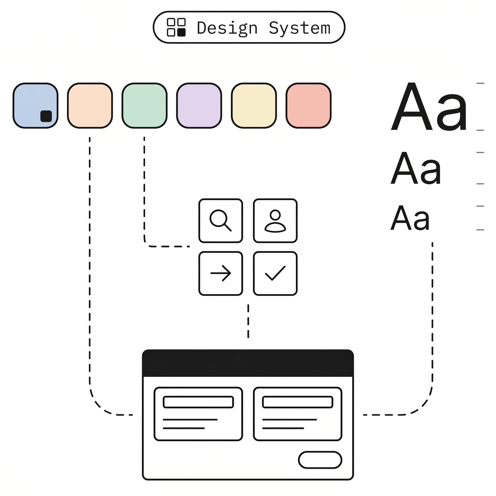

서비스 기획
세상의 문제에서 출발합니다.
페인 포인트를 먼저 정의하고 기획을 시작합니다.


Claude Design으로 구축되었음
가장 스마트한 콘텐츠 리터러시. 브랜드와 잠재고객을 크리에이터로 연결합니다.
인사이트를 세상에 연결합니다.
컨셉부터 제품, 경험까지 — 모두의 것.
폭넓은 경험과 넓은 네트워크를 기반으로 빠르게 구조를 설계합니다.
문제 정의부터 해결까지, 빠르게 비즈니스 인사이트를 확보할 수 있습니다.
세상의 문제에서 출발합니다.
페인 포인트를 먼저 정의하고 기획을 시작합니다.

상상 속 프로덕트를 가장 빠르게.
핵심 프로토타입을 며칠 만에 구현합니다.

일관된 디자인 시스템으로
기획 의도와 사용자 경험을 함께 설계합니다.

설계와 구현 사이의 거리를 좁히는 워크플로우. Claude·Antigravity를 활용한 AI 페어 개발로, 한 팀이 기획부터 운영까지 끝까지 책임집니다.
시리아이가 모두의
“시리아이(しりあい)”가 됩니다.
소개서를 살펴보거나, 세일즈 팀에 문의할 수 있습니다.